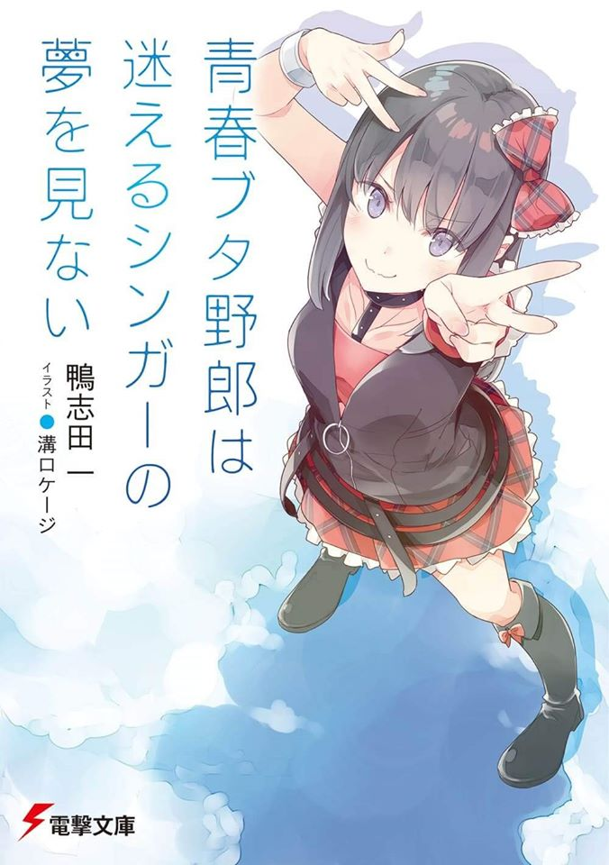

Seishun Buta Yarou wa Bunny Girl
Senpai no Yume wo Minai es una serie de novelas ligeras japonesa
escrita por Hajime Kamoshida e ilustrada por Keji Mizoguchi. La novela tiene como tema principal el "Sindrome de la pubertad"
el cual causa distintos problemas a las personas que tengan pero los sintomas son distintos en cada persona dependiendo de su personalidad puede ser desde ser invisible para la vista de otra gente, crear un bucle temporal,
haber dos tu, cambiar de cuerpo con otra persona, cambiar de personalidad casi por completo y viajar por el tiempo, la novela
cuenta con 11 volumenes por el momento y est en espera del 12vo el cual todavia no tiene fecha de lanzamineto por el momento,
en el voluem 10 se introduce un nuevo personaje "Uzuki Hirokawa"
la cual es la lider de "Sweet Barrett" grupo de idols en el que esta "Nodoka Toyohama"
.El volumen 11 se nos presenta un personaje importante para la trama "Ikumi Akagi" La cual
es una chica vestida de Santa aparece de repente frente a Sakuta y le da una advertencia Mai-San corre peligro nuevamente
y asi finaliza el capitulo dejando con suspenso al lector.


El amime de Seishun Buta Yarou wa Bunny Girl
Senpai no Yume wo Minai fue animado por CloverWorks
y se estreno el 4 de octubre de 2018 hasta el 27
de diciembre de 2018 contando con 13 episodios los
cuales abarcaron desde el volumen 1 al volumen 5.
Pasando con la Pelicula se estreno en Japón el 15
de junio de 2019 e igual que el anime fue animada por CloverWorks,
la pelicula tuvo una duracion de una hora y media en la cual se abarco el volumen 6 y 7 quien tuvo como personajes
principales a
Sakuta,Mai-San y a Shoko.Ambas animaciones tiene las clasificaciones
de: SobreNatural, Psicologico, Comedia y Romance.